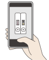
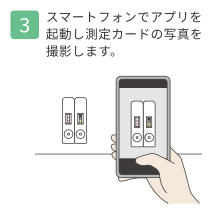
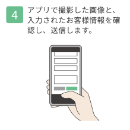

D判定が出た場合


ステージ0の
がんリスクにも対応
がんリスクにも対応
早期段階のがんリスクを示唆

早期段階の

がんリスクを示唆

自宅でカンタン！
おしっこ（Pee）で
がんのリスクがわかる
お申し込みは
こちら
健康的な社会生活を長く維持するために、
3カ月～6カ月に1回程度、
定期的ながんリスク確認を推奨します。
3カ月～6カ月に1回程度、
定期的ながんリスク確認を推奨します。
写真を撮って
専用アプリで送るだけ！

他社では類を見ない
最大限のアフターケア
他社では
類を見ない
最大限のアフターケア
不特定ながん疾患の
リスクに対応しています！
Pstageは、採取した
尿の郵送を必要としない
早期段階のがんリスクを示唆
するキットです。
Pstageのココがすごい!
早期段階で
がん発症の
可能性を示唆！

不特定な
がん疾患の
リスクに対応
3日以内に
結果が
お手元に
がん検診では難しい
ステージ0・1のがんリスクを判定!
1-reason
早期段階で可能性を
示唆できる理由
ステージ0の
がんリスクにも対応！
がん細胞の特徴の一つである細胞の異常増殖に伴い、
ジアセチルスペルミン（DiASpm）の
尿中排泄量が増加することが発見されました。
P-stageは、尿の採取により
ジアセチルスペルミンの排泄量を測定する
ことで、
一般的な測定では発見が難しいと
されているステージ0〜2のがんが発生している
リスクを超早期段階で発見することができます。
公益財団法人東京都医学総合研究所等の
研究成果に基づく商品です。

2-merit
がんを早期発見する
メリット
生涯で、日本人の2人に1人ががんと
診断されると言われていますが、
発見されたがんのステージ（ステージ0~4）に
よって生存率は大幅に変わります。

診断から10年後の時点での状況を分析した生存率のデータ
がんの早期発見は、
高い生存率で治療が可能なだけでなく、
比較的治療期間も短く、
その分治療費用も
安く抑えることに繋がります。
3-limit
タイムリミットは1~2年!
がんを一般的な測定で発見できるのは1cmから。
がんは1cmの大きさになるのに
10~20年という長い年月をかけて成長しますが、
1cmを超えると成長が急激に加速します。
ステージ0のがんリスクを判定!

Pstageは
不特定ながん疾患のリスクに対応！
がん細胞が
異常増殖している可能性を判定します
口腔・咽頭がん
食道がん
肺がん
乳がん
胃がん
肝臓がん
すい臓がん
胆のうがん
胆管がん
大腸がん
腎臓がん
膀胱がん
卵巣がん
子宮がん
前立腺がん
癌の特徴の一つである細胞の異常増殖に
よって生じる代謝産物を測定することで、
癌罹患のリスクを判定します。
そして、この事象は癌罹患の進行に伴い
産生される物質ではないことから、
癌のステージには大きく依存せず、
超早期段階のステージ0や
ステージ1の段階でも
リスク判定ができます。
「不特定」の早期がんリスクを調べるなら
郵送なし!
自宅でカンタン、測定結果は3日以内！
一般的ながん測定キットは、
採取した専用のキットを
郵送で送ることがほとんど。
P-stageでは、
専用のキットをスマホで撮って送信するだけ！
結果は3日以内届きます！
採取後は郵送なしの
カンタン4ステップ！




ステージ0のがんリスクを判定!
さらに
判定結果に応じた
手厚いサポート
-
After
01
-
After
02
無料でキットを再送
（誤反応の可能性があるため） -
After
03
再度、D判定が出た場合
-
After
04
尿を郵送していただき、
メーカー側で再度細かい測定を
実施させていただきます。
判定結果が変わらない場合は
お客様にあった医療機関を
紹介するなどの
アフターケアを実施します。


料金表


1回測定コース
Pstageが定期的に届く！
さらにおトクで安心な
定期コースをご用意しております。
6ヶ月に一回の
定期測定コース
送料無料！
￥12,000（税込）
判定結果によってメーカーから
医療機関での検査を
推奨させていただいた場合、
検査費用の最大10万円分を
お支払いします。
判定結果によってメーカーから
医療機関での検査を
推奨させていただいた場合、
検査費用の最大10万円分を
お支払いします。
こんな人におすすめ！
- ・定期的に測定したいけど、忘れてしまいそう...
- ・忙しくて毎回の注文が面倒...
- ・定期的に測定したいから、もっと費用を抑えたい

測定の流れ
だから続けられる。
測定がカンタン、お手頃価格
利用者の声
40代男性
写真を送るだけで、早期がんリスクを調べることができ、とても便利でした！
翌日に検査結果を送っていただきリスクなし判定をもらい、安心して毎日を過ごしています。
定期的に実施しようと思っています。
30代女性
尿の郵送をしなくてもいいところがとても便利で、使わせてもらいました。
検査結果も問題なく、不安が払拭されました。
この金額で早期がんのリスク判定ができるならとても安いと思うので購入して良かったです。
よくあるご質問
コロナ抗原キットと同じようにラインが出るとだめということですか？
Pstageはラインのあるなしで判定するものではありません。
画像に基づき判定します。
おしっこが点着部に溜まったままになっていますがそれでいいですか？
Pstageはラインのあるなしで判定するものではありません。
画像に基づき判定します。
おしっこを点着してから画像を撮影するまでどのくらいの時間の猶予がありますか？
Pstageはラインのあるなしで判定するものではありません。
画像に基づき判定します。
おしっこが点着部に溜まったままになっていますがそれでいいですか？
Pstageはラインのあるなしで判定するものではありません。
画像に基づき判定します。
会社概要
| 事業者名 | ゼアーウィンスリーサービス株式会社 |
| 代表取締役社長 | 一戸 翼 |
| 住所 | 〒105-0001 東京都港区虎ノ門1-16-16 MGビル8F |
| 電話番号 | 050-5443-6775 |
| pstage@tw3s.jp | |
| 製造元 | 株式会社シルクリ技研 |
| 住所 | 〒136-0071 東京都江東区亀戸3-59-10 |
※１ 本キットは医療用測定具ではございません。
あくまでも健康管理を目的とした製品で、自覚症状があるときや、不安があるときの測定目的ではなく、
健康的な社会生活を長く維持するために、3カ月～6カ月に1回程度、定期的ながんリスク確認を推奨します。
※２ 判定結果はがん疾患を確定するものではなく、また低リスク判定でもがん罹患の可能性がないというわけではございません。
※３（１）発明の名称「腫瘍マーカーとしての N1,N12-ジアセチルスペルミン」特許第４６０８４３２号
（２）発明の名称「腫瘍マーカーとしての N1,N12-ジアセチルスペルミン」特許第５５８６３６８号